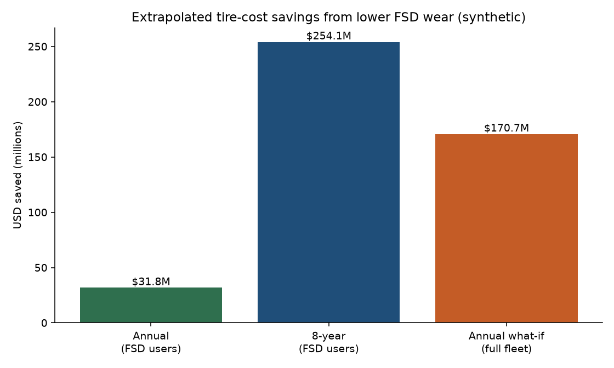
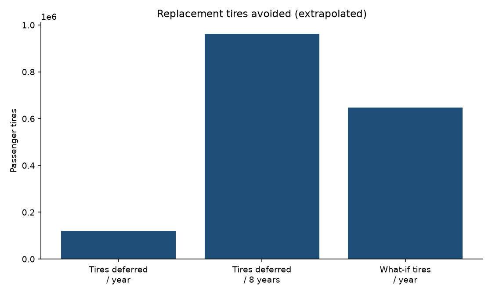
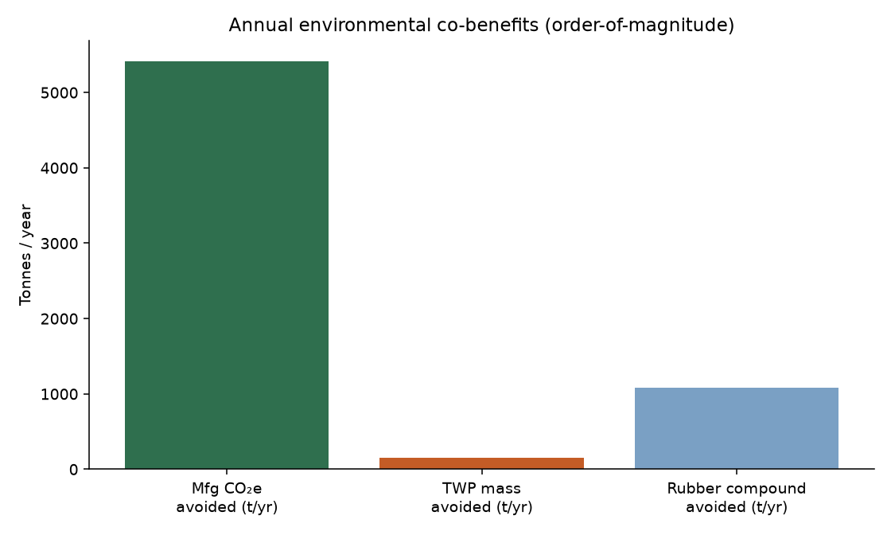
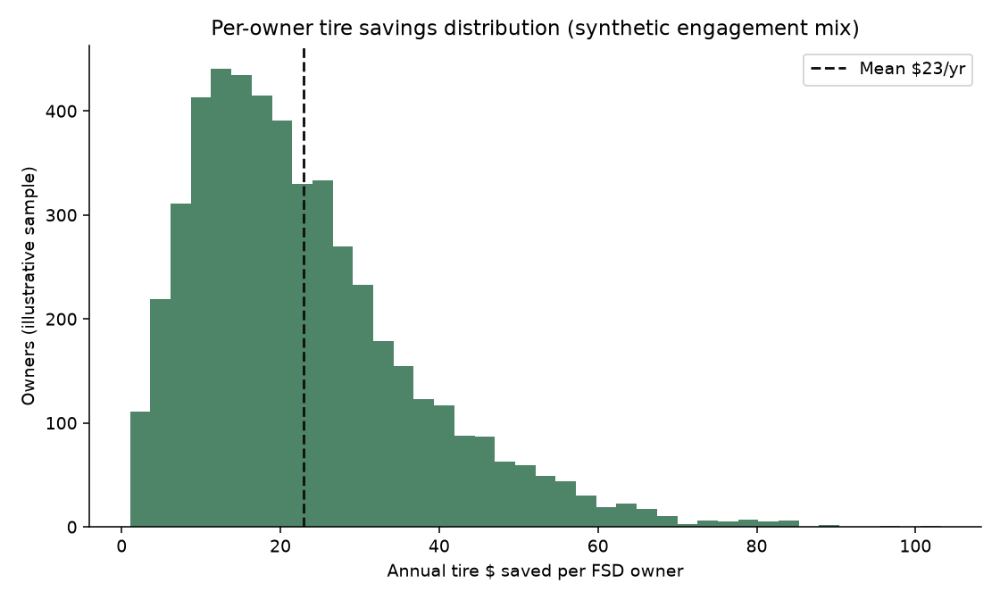
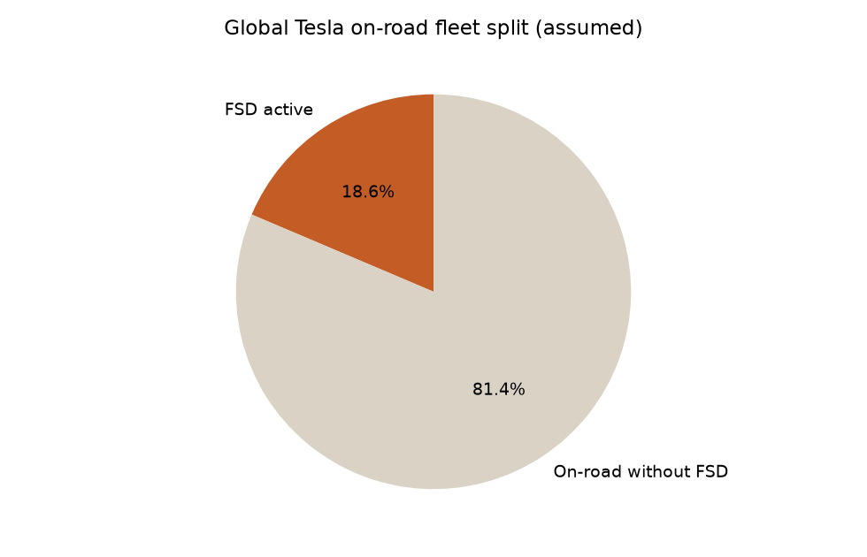

Executive summary
If FSD miles wear tread 11.9% less than manual miles (synthetic assumption), today’s ~1.48M FSD-active Teslas — driving ~6.81B FSD miles/year at 40% engagement — would save owners about $31.8M per year (~$21 per FSD owner), defer 120,426 tires of replacements, avoid roughly 5,419 tonnes CO₂e of tire manufacturing, and keep ~153 tonnes of tire-wear particles out of air/soil/water versus an all-manual counterfactual on those same miles.
Over an 8-year ownership horizon that compounds to ~$254.1M and ~963,409 tires deferred among current FSD users. If the entire ~8.0M on-road fleet used FSD at the same engagement rate, annual savings scale to ~$170.7M.
Money saved on tires
| Metric | Value |
|---|---|
| TCI savings on FSD miles | $4.66 / 1,000 mi |
| Annual FSD miles (global) | 6.81 billion |
| Annual owner savings (TCI method) | $31.8M |
| Cross-check via deferred sets × $1,050 | $31.6M |
| Average per FSD owner / year | $21 |
| 8-year cumulative (current FSD base) | $254.1M |
| What-if full on-road fleet / year | $170.7M |
How the dollars are counted
- Only FSD-attributed miles get the wear discount (engagement ≈ 40%).
- Savings = FSD miles × (manual TCI − FSD TCI) from the synthetic KPI run.
- Deferred-set cross-check converts avoided tread depth into equivalent full tire-set lives × $1,050.
- Does not subtract FSD subscription cost — this is tire OPEX only.
Worldwide environmental impact
| Impact pathway | Annual (FSD users) | 8-year |
|---|---|---|
| Replacement tires deferred | 120,426 | 963,409 |
| Tire sets deferred | 30,107 | 240,852 |
| Manufacturing CO₂e avoided | 5,419 t | 43,353 t |
| Tire wear particles avoided | 153 t | 1,220 t |
| Rubber compound demand avoided | 1,084 t | 8,671 t |
| Tree-year CO₂e equivalence (rough) | 258,056 | 2,064,448 |
Why this matters environmentally
- Fewer replacements → less rubber, steel, carbon black, factory energy, and shipping.
- Less tire-wear dust → fewer microplastics and zinc-bearing particles to roads, stormwater, and air.
- Manufacturing CO₂e uses ~45 kg CO₂e/tire cradle-to-gate (order-of-magnitude LCA anchor).
- Use-phase rolling-resistance energy is not re-modeled here; this report isolates tire wear / replacement effects.
Visuals





Assumptions & sources
| Input | Value | Role |
|---|---|---|
| Cumulative Tesla deliveries | 9,700,000 | Public ~Q2 2026 press/filings context |
| On-road retention | 82% | Assumption → 7,953,999 on-road |
| Active FSD subscriptions | 1,480,000 | Tesla Q2 2026 disclosed metric |
| Mean annual miles | 11,500 | Global blend assumption |
| FSD engagement | 40.0% | From synthetic fleet summary |
| NTWR manual → FSD | 0.245 → 0.216 mm/1k | Synthetic FSD-favorable KPI |
| Avg tire set price | $1,050 | Blended EV performance set |
| CO₂e / tire (cradle) | 45 kg | LCA order-of-magnitude |